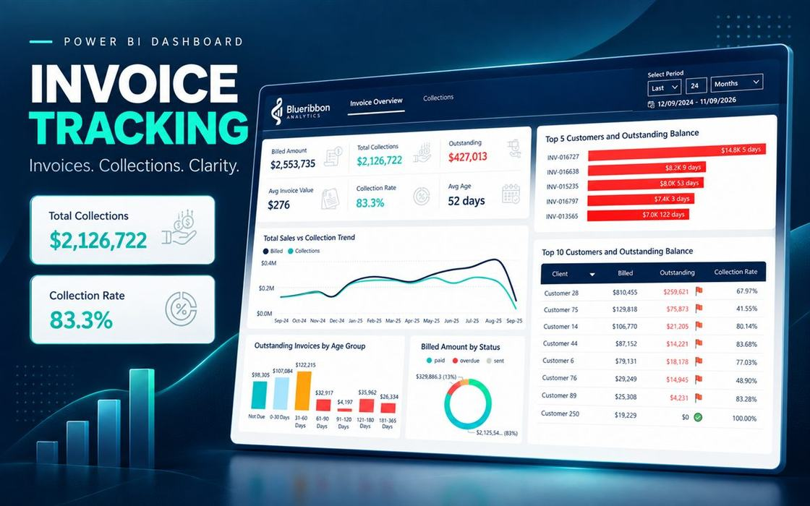

Automated visibility into outstanding invoices

A cardiac clinic based in Panama had no way to track outstanding invoices without manually logging into their accounting software. I connected directly to their accounting API and built a live invoice tracking dashboard showing exactly what's outstanding.
Figures in the live report are randomized for client privacy. View live report